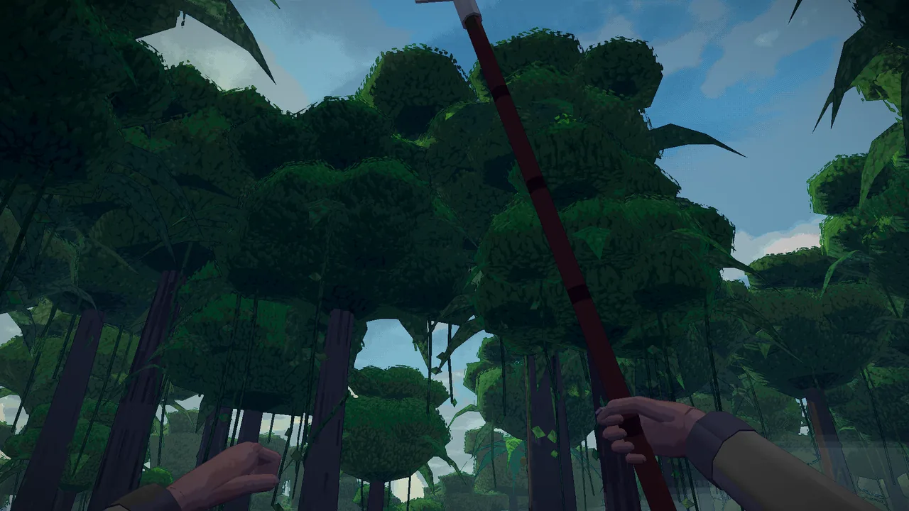
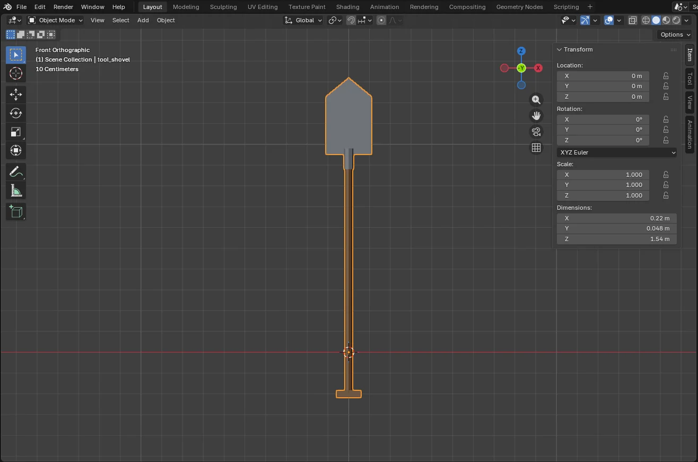
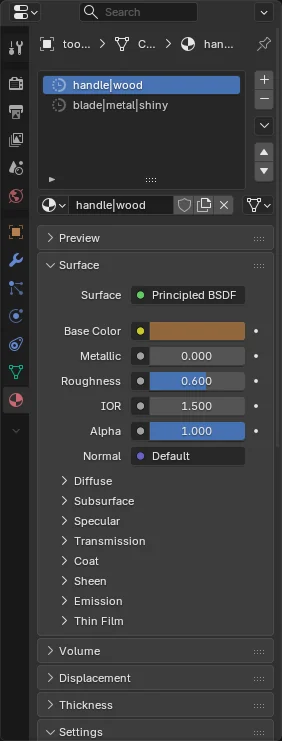

1 of 3tool_shovel1.54 m
A dig shovel
Replaces the shovel you dig with in first person. The hand holds it at the origin, 20 cm up from the end of the handle, with the blade up the Z axis.

- Open Blender and start a General file. Delete the cube (X). The scene is already in meters.
- The handle. Add › Mesh › Cylinder. In the panel that opens bottom left, set Vertices 8, Radius 0.018 m, Depth 1.15 m, Location Z 0.375 m. It now runs from 20 cm below the origin to 95 cm above it.
- The grip. Add › Mesh › Cube at Location Z −0.2 m. In the sidebar (N), set its Dimensions to 0.12 × 0.035 × 0.035 m.
- The blade. Add › Mesh › Plane with Rotation X 90° and Location Z 1.1 m. Set Dimensions X 0.22 m and Y 0.30 m (standing up, the plane's own Y is its height). It stands across the handle with its face looking along Y.
- Its point. In Edit Mode (Tab), select the top edge and Subdivide. Move the new middle vertex up 7 cm (G Z 0.07) and the two top corners down 2 cm.
- Thickness. Add Modifier › Generate › Solidify, Thickness 0.006 m, Offset 0, then Apply it (Ctrl+A over the modifier). Joining in step 9 keeps only one object's modifiers, so apply it now.
- The socket. Add › Mesh › Cylinder with Vertices 8, Radius 0.024 m, Depth 0.1 m, Location Z 0.93 m.
- Materials. Select the handle and, in Material Properties, press New and rename the material
handle|wood. For the grip, pickhandle|woodfrom the list beside New. Makeblade|metal|shinyfor the blade and the socket. Each one's color is its Base Color. To paint it instead, plug an image into Base Color and UV-unwrap the object: the image is drawn on it in the game. - Join. Select all (A), press Ctrl+J, then Ctrl+A › All Transforms. That puts the object's origin at the world origin, 20 cm up the handle where the hand holds it, and makes the sidebar read true: about 0.22 × 0.05 × 1.54 m.
- Export with the settings above as
models/tool_shovel.glbin your pack. Turn the pack on, put a shovel in your hotbar, and look up.


The shovel is made in code, not in the model library. model_names.txt lists tool_shovel with its size but no info.